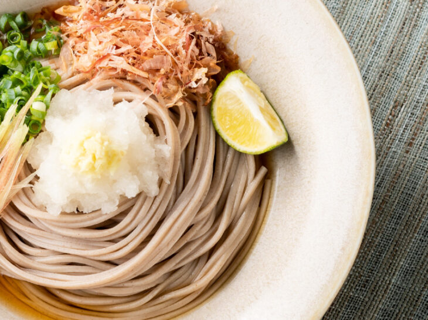
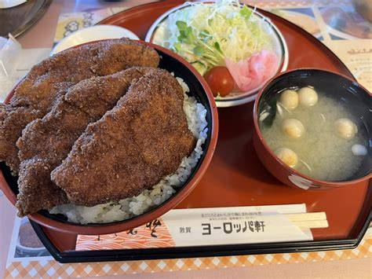
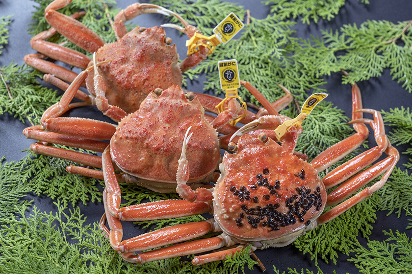
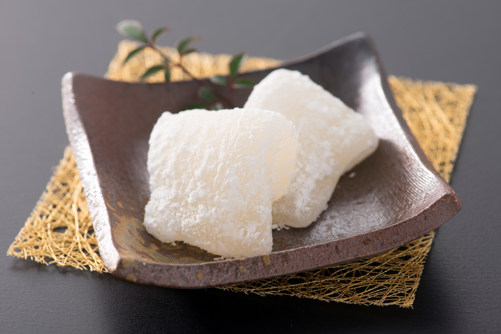

越前そば
大根おろしと鰹節がのった冷たいそば！だしも絶妙なご当地そば！個人的に巣立ちを入れるとさらに風味もよくなりいいかも！

ソースかつ丼
薄くスライスされた豚肉をきめ細かいパン粉でカラッと揚げ、 アツアツのうちにあまじょっぱいソースに絡めたカツをご飯に乗せた料理で、県民のソウルフードと言われるほどに人気なもの！

越前かに
冬の味覚の絶対的王様。越前市の海岸沿いの飲食店や旅館で新鮮でぷりぷりなカニが楽しめる！

羽二重餅
福井県の特産品の一つ、絹織物「羽二重」にちなんで作られた和菓子で、もっちりとしたお餅が特徴！